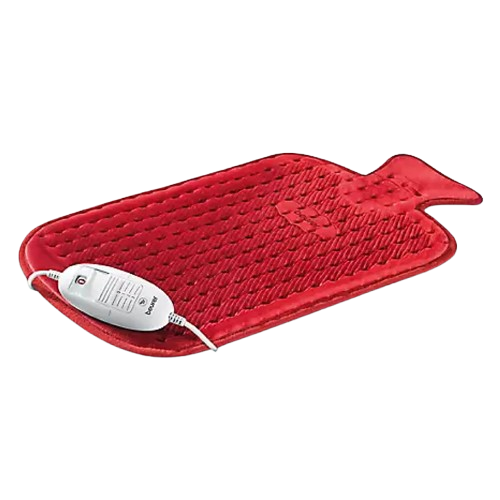

Lower Back Strains: These occur when muscles or tendons in the lower back are stretched or torn, often caused by sudden movements, heavy lifting, or awkward positions. During an earthquake, these injuries can result from falls, lifting debris, or quick movements while escaping danger.
First Aid: Rest the back and avoid any activity that increases pain.
Apply ice packs wrapped in cloth for 15–20 minutes several times a day during the first 48 hours to reduce swelling and pain.
After 48 hours, switch to gentle heat (like a warm compress or heating pad) to ease stiffness.
Use over-the-counter pain relievers such as acetaminophen or NSAIDs to manage discomfort.
As pain improves, begin gentle stretches and slow movement. Avoid heavy lifting or intense activity until fully healed.
Seek medical help if pain gets worse, lasts more than a few days, or if you experience numbness, weakness, or trouble with bladder or bowel control — these could signal a serious issue.
 Back